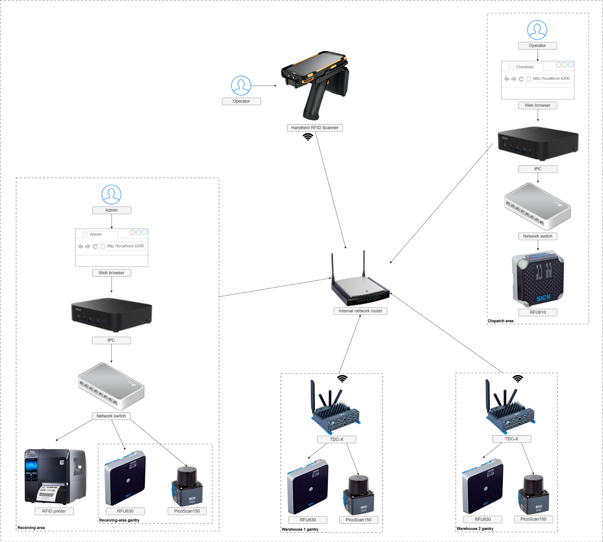

System, Devices & Network
Understand the system architecture, integrated devices and approved network configuration.
System architecture
The central Asset Tracking System stores master data, Asset state, Movements, Scan Histories, Alerts and Settings. Edge applications collect RFID/device data and run warehouse workflows.
Admin Web / Asset Tracking System
Central configuration and monitoring for Assets, Locations, Racks, Devices, RFID rules, Alert rules, Movements, Scan Histories, Alerts and Settings.
Handheld RFID Application
Supports Rack/Asset identification and Rack Stock Take workflows, including Shipment-based validation and offline/recovery behavior.
Dispatch RFID Scan Application
Supports Shipment-based partial Checkout using the RFID reader assigned to the Dispatch workstation.
Gantry RFID Scan Application
Combines RFID observations with passage/direction detection and sends observation data to the central system for movement processing.
Device architecture

Integrated devices and purposes — reference deployment
| Device / component | Purpose | Site network address | Notes |
|---|---|---|---|
| Admin / Receiving IPC | Hosts central Admin functions and connects to local Receiving devices. | 192.168.0.2 (wired) 192.168.1.2 (backbone) |
Worksheet calls this “Third-party PC 1”; verify physical label before assignment. |
| Dispatch IPC | Runs Checkout Webpage and interfaces with RFU610. | 192.168.0.50 192.168.1.50 |
Worksheet calls this “Third-party PC 2”; verify label. |
| SATO CL4NX Plus 230 dpi | Prints/encodes Asset RFID labels. | 192.168.0.3 | Receiving area. |
| RFU610 | Fixed RFID reader for Dispatch Checkout. | 192.168.0.51 | Connected to Dispatch workstation network. |
| TDC-X Gantry 1 | Runs Gantry Node-RED logic for local RFU/LiDAR pair. | 192.168.0.100 192.168.1.100 |
Dual interface. |
| RFU630 Gantry 1 | Reads UHF Asset tags. | 192.168.0.101 | Local Gantry 1 LAN. |
| picoScan150 Gantry 1 | Detects passage/direction. | 192.168.0.102 | Local Gantry 1 LAN. |
| TDC-X Gantry 2 | Runs Gantry Node-RED logic. | 192.168.0.100 192.168.1.110 |
Dual interface. |
| RFU630 Gantry 2 | Reads UHF Asset tags. | 192.168.0.111 | Local Gantry 2 LAN. |
| picoScan150 Gantry 2 | Detects passage/direction. | 192.168.0.112 | Local Gantry 2 LAN. |
| TDC-X Gantry 3 | Runs Gantry Node-RED logic. | 192.168.0.100 192.168.1.120 |
Dual interface. |
| RFU630 Gantry 3 | Reads UHF Asset tags. | 192.168.0.121 | Local Gantry 3 LAN. |
| picoScan150 Gantry 3 | Detects passage/direction. | 192.168.0.122 | Local Gantry 3 LAN. |
| Internal router | Wi-Fi/backbone connectivity. | 192.168.1.1 | Backbone subnet 192.168.1.0/24. |
| CipherLab handheld | Mobile Rack/Asset scanning. | Wi-Fi / DHCP or site-assigned | Configure Device ID and Location in app Settings. |
IP address assignment
Use the approved site IP plan. Configure each fixed device with its assigned address, then verify connectivity before configuring the application.
192.168.0.100. This is safe
only when each Gantry local Ethernet segment is isolated. Do not
bridge those local segments together without changing the duplicate
addresses.
Recommended assignment sequence
- Label the physical unit and confirm which installed subsystem, Location, or workstation it belongs to.
- Connect the device to the intended local network segment before changing its address.
- For supported SICK network devices, use SOPAS ET to set the approved IP address and subnet.
- For TDC-X and PicoScan LiDAR, open the device webpage and set the approved IP address/subnet there.
- For third-party equipment, use the device's own network configuration interface and apply the approved site address.
- Confirm that no duplicate IP address exists on the same physical network segment.
- Ping or otherwise test the device from its controlling workstation/controller.
- Create or update the matching logical Device in Admin Web with the correct Location, type and identifiers.
- Configure the corresponding edge application with the same Device identity and Location.
- Run the application's connection test and verify Device status in Admin Web.
Per-device configuration checklist
| Unit type | Configure on the unit/application | Also configure in Admin Web | Verify |
|---|---|---|---|
| Central / Admin workstation | Configure the workstation network settings using the operating system/network interface, then verify browser access to Admin Web and connectivity to required central services. | Create logical workstation/device records only where required by the deployment; all operational RFID/printer identities must be represented correctly. | Admin login, Dashboard and connectivity to required site devices/services. |
| Dispatch workstation | Configure workstation network settings using the operating system/network interface; then configure the Checkout application, assigned RFID reader host/port, central server and MQTT settings. | Matching Dispatch/Checkout device identity and Location. | Central service, MQTT and RFID reader indicators are healthy before Checkout. |
| RFID label printer | Configure the approved network address using the printer's own configuration interface, then verify printer readiness, media/tag setup and RFID calibration. | Printer Device record with correct network/model metadata. | Print a test label and verify the EPC matches the Asset Tag ID. |
| Dispatch RFID reader | Configure the approved IP address/subnet in SICK SOPAS ET, then configure the reader TCP behavior required by the Dispatch application. | Associate the reader with the correct Dispatch workstation/device identity according to the deployment design. | Reader status is Online and a known tag can be detected. |
| Gantry controller | Configure the TDC-X IP address/subnet from its connection webpage in a web browser. Then configure the local device network, backbone connection where applicable, and the deployed Gantry application/flow. | Matching Gantry Device ID and Location. | Local RFID/direction devices are reachable and the controller can reach central messaging/services. |
| Gantry RFID reader | Configure the approved local IP address/subnet in SICK SOPAS ET, then configure RFID/read-zone settings appropriate for the installed Gantry. | Represent through the Gantry application/device model according to site design. | A known EPC is captured correctly during a controlled passage. |
| Gantry direction sensor | For the PicoScan LiDAR device, configure the IP address/subnet from its connection webpage in a web browser. Then configure the required detection fields/zones for the physical passage. | Direction is reported through the Gantry application/device identity. | Controlled passages produce the expected ENTRY/EXIT direction. |
| Handheld RFID terminal | Wi-Fi, vendor RFID settings, application Device ID, Location, API, MQTT, sync/cache and access settings. | Handheld Scanner Device record at the matching operational Location. | API/MQTT/RFID tests pass; Rack QR and known Asset scans resolve correctly. |
| Router / switches / network infrastructure | Use the network equipment's own management interface to apply the approved subnet, routing, VLAN, port and wireless settings from the commissioning network plan. | No normal business Device record is required unless explicitly modeled by the deployment. | All applications can reach the services and devices required for their workflow. |
Gantry application settings
For each Gantry, configure its Device ID, Location ID, local RFID reader, direction sensor and central MQTT broker. Use the approved event topic, QoS and retain settings.
Architecture notes to verify on site
- Confirm installed Gantry controllers against the approved hardware drawing and IP plan; update both records after expansion or relocation.
- Do not copy device passwords from commissioning spreadsheets into general user documentation; keep them controlled by the site administrator.